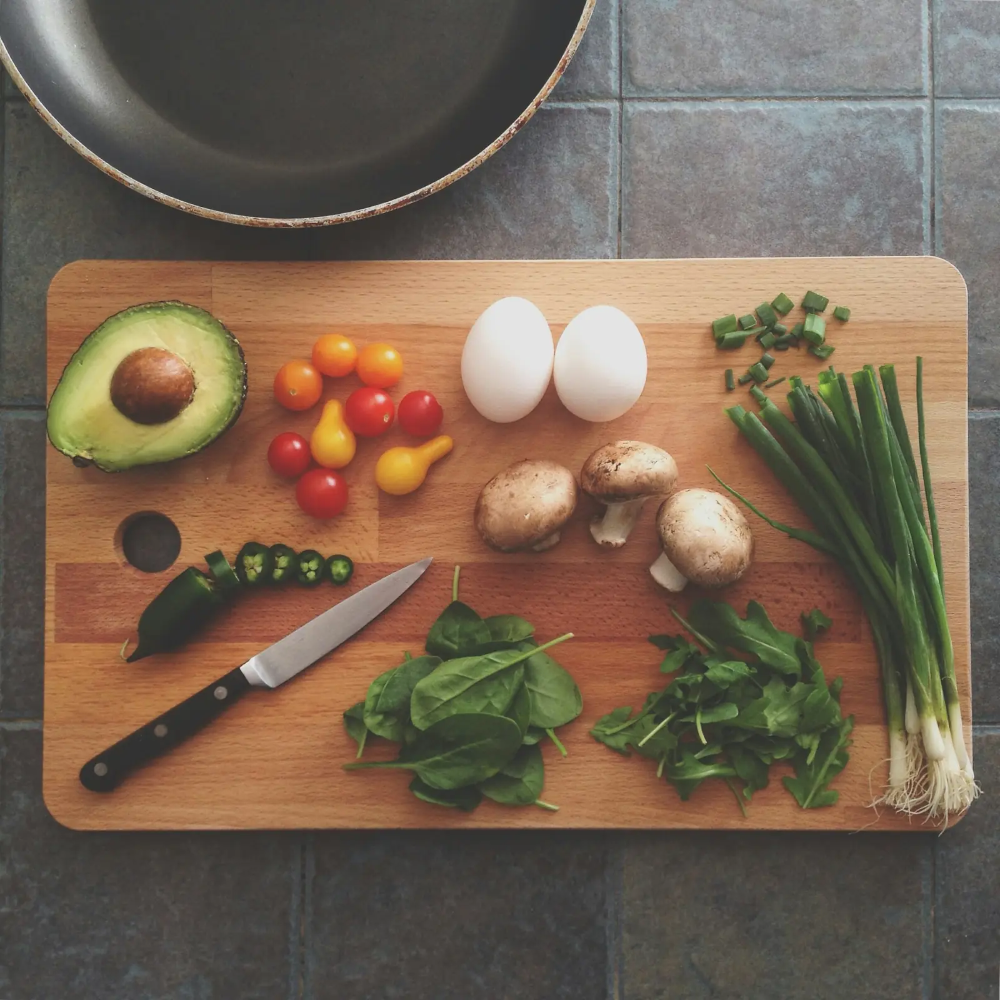
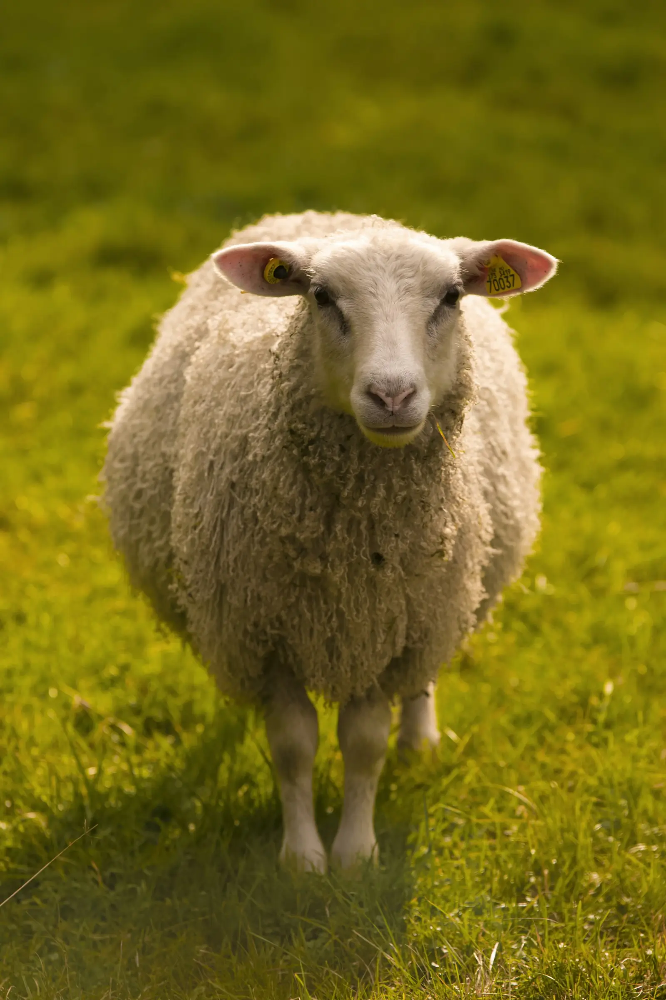
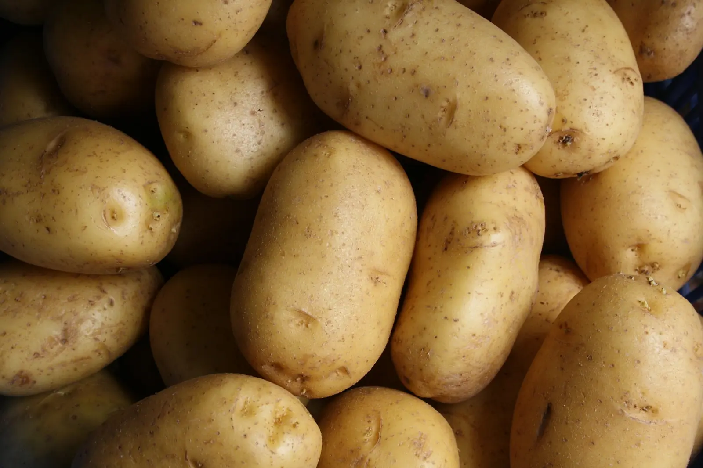

Die Schäferei
Heidschnucken aus Landschaftspflege – das Fleisch kommt als ganzes Tier, wir verarbeiten alles.

Unsere Küche
Heidschnucke, Heidespargel, Buchweizen und Heidehonig: Wir kochen mit dem, was in der Region wächst – und mit Menschen, die wir persönlich kennen.

Das Wappentier der Heide
Ohne Heidschnucken gäbe es die Lüneburger Heide nicht, wie wir sie kennen. Die genügsamen Schafe halten die Heideflächen frei und sorgen dafür, dass das Heidekraut jedes Jahr neu blühen kann.
Ihr Fleisch ist fein, mager und hat ein leicht wildartiges Aroma – kein Wunder bei einem Leben unter freiem Himmel. Die „Lüneburger Heidschnucke“ ist in der EU als geschützte Ursprungsbezeichnung eingetragen.
Unser Schäfer betreut seine Herde keine 30 Kilometer von unserer Küche entfernt. Daraus wird bei uns die geschmorte Keule, der Burger und die Bratwurst für den Mittagstisch.
Zu den GerichtenUnsere Erzeuger
Die meisten unserer Zutaten reisen weniger als 50 Kilometer. Ein paar der Menschen, mit denen wir zusammenarbeiten:
Heidschnucken aus Landschaftspflege – das Fleisch kommt als ganzes Tier, wir verarbeiten alles.
Kartoffeln, Heidespargel, Kohl und Kürbis, im Sandboden der Heide gewachsen.
Heidehonig, der nur in wenigen Wochen im Spätsommer entsteht – kräftig, würzig, unverwechselbar.
Forellen und Lachsforellen aus klarem Quellwasser, frisch geräuchert oder für die Pfanne.
Saisonkalender
Heidespargel, Bärlauch, junger Spinat, Rhabarber, erste Erdbeeren.
Heidelbeeren, Matjes, Pfifferlinge, Gurken, Heidehonig zur Heideblüte.
Heidschnucke, Wild aus heimischer Jagd, Kürbis, Pilze, Äpfel.
Grünkohl, Rotkohl, Ente, Schmorgerichte, Buchweizentorte am Kamin.

Handwerk statt Packung
Gut essen. Zusammen sein.
Am besten bei der geschmorten Heidschnuckenkeule – oder einem Stück Buchweizentorte.